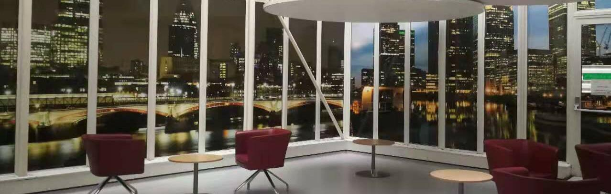

Teaching
State-space Models Colloquium @ UW (2025)
Co-organized an interdisciplinary colloquium for students and researchers in the UW community.
Lecturer in Mathematics @ Westlake University (May–Sep 2023)
Taught Probability & Statistics in the Department of Mathematics.
Graduate Teaching Assistant @ LSE (Oct 2019–Sep 2021)
ST449: AI and Deep Learning (2020/21)
Taught deep learning seminars and held weekly office hours for master's students. Marked assignments and projects.
ST102: Elementary Statistical Theory (2019/20) Teaching and Marking
ST425: Statistical Inference (2019/20) Project Marking
Mathematics Ambassador @ University of Oxford (2015–2018)
Organized workshops and summer schools for students from diverse backgrounds.
Mentoring
Industry Mentor @ AISES National Conference (Oct 2026)
Mentored STEM students from across the country on career development.
Academic Mentor @ UW (Oct 2024–Oct 2025)
Mentored master's students on statistical projects involving large-scale brain datasets, including the Allen Brain Cell Atlas SEA-AD dataset.
Student Mentor @ LSE (Oct 2019–Jun 2020)
Supported MSc Data Science students with coursework, statistical projects, and preparation for doctoral research.
I am interested in teaching mathematics, probability, statistics, and machine learning, including interdisciplinary courses that connect these methods with scientific problems.